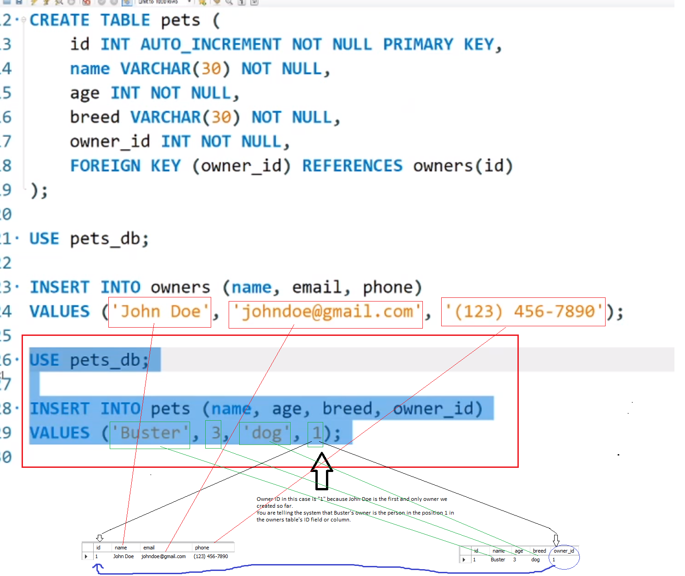

Day1
Day2
Day3
Day4
Day5
Day 01

Make a basic database in MySQL
Give the pets and the owners an "id" with the following line:
id INT AUTO-INCREMENT NOT NULL PRIMARY KEY,
Now you can make a relationship between certain owners and pets

Add the use statement, and Owners needs to be above pets. (for Hiearchy in the function)
Give the pets the following lines so that they have an ID:
owner_id INT NOT NULL
FOREIGN KEY (owner_id) REFERENCES owners(id)
"NOT NULL" means every pet must have an owner. There are no pets without owners in this databse

Now let's create an owner and a pet
**************** create owner *************

**************** create pet ************

Now we want to get information about Buster's Owner, John Doe. We want his name email and phone number. We need
a join query for this.
Use the following code:
Now to try a different type of join, we have to create a second owner. Create Jane Doe.
Make the following changes to the code:
- change the inner join to left join. Result: nothing different, because there is no such thing as a pet that
does not have an owner id.
- Now swap out the owners and pets. Change from pets to from owners and left join owners to left join pets.
Result: in this case there is an owner that doesn't have a pet. So it will show NULL for all the pet fields,
but it will show Jane Doe's info.
- Now use the same example above and switch to a right join. Result: nothing will come up because there is not a single pet without an owner.
Starting a new GITHUB for the employee manager app, based on this database.
Schema.sql inside sql folder:
seed.sql inside sql folder:
Bring in your index.js file in the root folder:
LINK TO code on GITHUB
Watch Monday 8/24 video, after lunch at the 3:00 hour mark for the details on the code above.
.
Quinton's Github Link Click